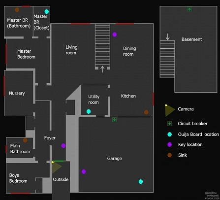
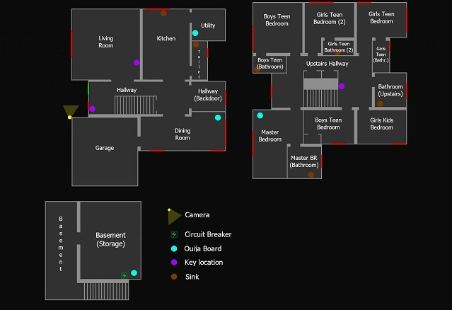
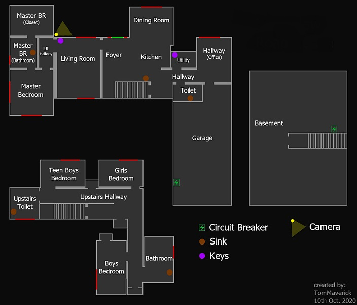
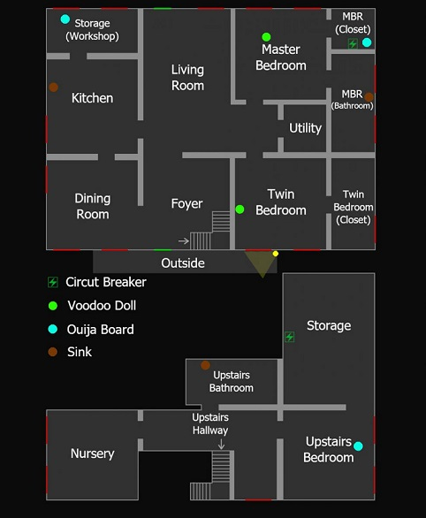
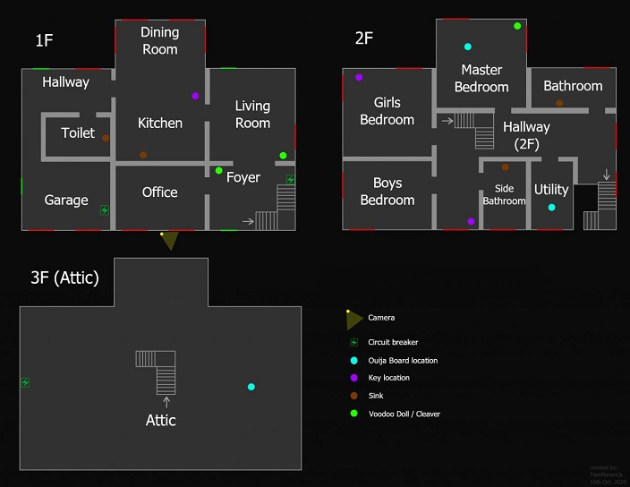
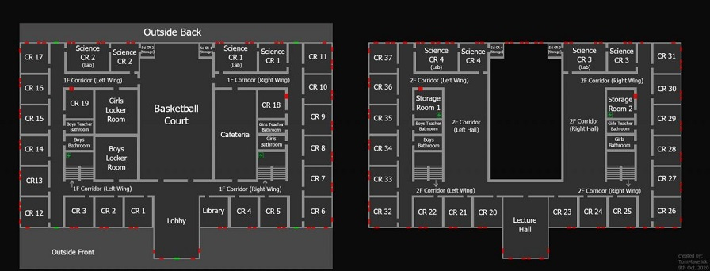
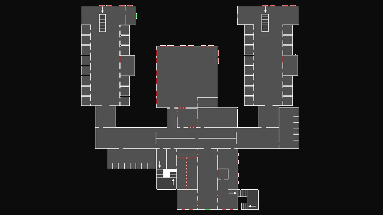
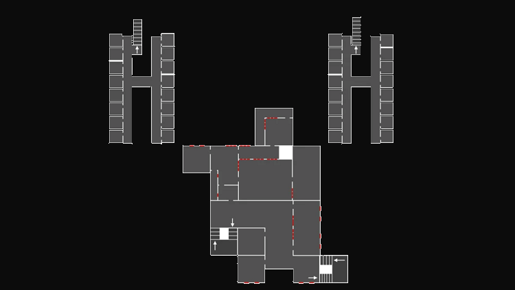
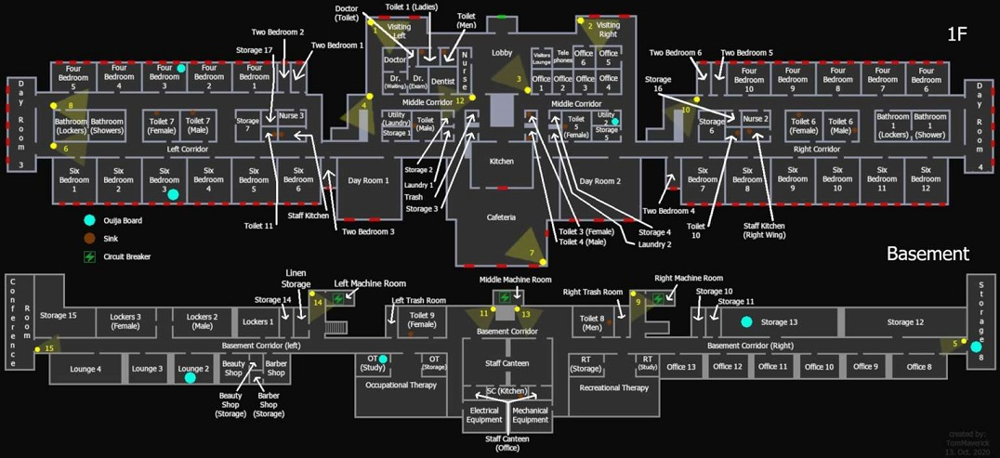

bas de page ↓

- Map
Maison:
- Maison Rue Tanglewood: Petite maison pouvant permettre une enquête rapide en raison de sa petite taille, peut de placards accessibles ce qui rend l'entité très dangereux penddant sa chasse.
- Petite map: 1 porte de sortie, deux étages, 10 salle l'étage 1, 1 salle au sous-sol, 3 robinets

- Maison Rue Edgefield: Maison avec un environnement encombré et claustrophobe. cependant il y a beaucoup de cachettes pendant une chasse car il y a toujours une pièce où se cacher a quelques pas.
- Petite map: 1 porte de sortie, Trois étages, 7 salle l'étage 1, 11 salle l'étage 2, 2 salle au sous-sol, 4 robinets

- Maison Rue Ridgeview: Maison avec un environnement encombré avec de nombreux couloirs linéaires, la plupart des piéces étant petites, ayant de nombreux obstacles ou les deux. cependant il y a plusieur cachettes comme des placards et plusieur souspièces pendant une chasse.
- Petite map: 1 porte de sortie, Trois étages, 9 salle l'étage 1, 6 salle l'étage 2, 1 salle au sous-sol, 5 robinets

Ferme:
- Ferme Grafton: l'une des petites cartes de phasmophobia et l'une des deux variantes de la ferme. il y a aucun placards et les salles sont grandes donc il y a de gros risque pendant une chasse.
- Petite map: 2 porte de sortie, Deux étages, 11 salle l'étage 1, 5 salle l'étage 2, 3 robinets

- Ferme Bleasdale: l'une des petites cartes de phasmophobia et l'une des deux variantes de la ferme. il y a aucun placards et les salles sont grandes donc il y a de gros risque pendant une chasse.
- Petite map: 4 porte de sortie, Trois étages, 7 salle l'étage 1, 7 salle l'étage 2, 1 salle grenier, 4 robinets

Ecole:
- Ecole: De longs couloirs décrépis, des salles de classe inquiétantes, des salles de bains grotesques et divers espaces de bureaux vacants remplissent l'endroit d'une atmosphère inquiétante. Sa forme carrée et sa symétrie générale peuvent rendre la navigation intuitive, et selon le fantôme, il peut être plus facile de courir pendant une chasse que de se cacher.
- Moyen map: 5 porte de sortie, Deux étages, 8 salles de bain avec une rangée de lavabos,34 salle l'étage 1, 33 salle l'étage 2, 15 caméras
- à savoir: il y a énormément de téléphone dans l'école de se fait on peut entendre des faibles sonneries dans les couloirs. Suivre le son et vous trouverez peut-être la salle du l'entité.
En raison de la distance entre les entrées disponibles et le camion, il est recommandé de monter le matériel près du bâtiment avant de commencer la mission.

Prison:
- Prison: Prison récemment fermé en raison d'un décès inexpliquer. Nous avons reçu il y a peut de temps des informations sur une possible hantise à cet endroit. Vous serez donc envoyé pour rassembler autant de preuve que possible afin qu'une équipe de suppression de fantôme puisse s'en débarrasser.
- Moyen map: 3 porte de sortie, Deux étages, 19 salle l'étage 1, 12 salle l'étage 2, 16 robinets, 6 caméras au première étage et 5 au deuxième


Asile:
- Asile: Asylum est la première grande carte à être ajoutée lors d'un accès anticipé. Son architecture labyrinthique, associée à ses couloirs et couloirs sans fin, en fait une aventure intimidante, et même l'enquêteur paranormal le plus expérimenté peut se perdre.
- Grande map: 1 porte de sortie, Deux étages, 78 salle l'étage 1, 43 salle au sous-sol, 15 caméras, 17 robinets
- à savoir: une lampe de poche puissante et des bougies placées aux intersections clés peuvent ne pas être suffisantes pour empêcher une perte de santé mentale dans ces salles sombres, alors assurez-vous d'emporter beaucoup de pilules de santé mentale avant de commencer une enquête.

Retour en haut ↑ Retour choix Map